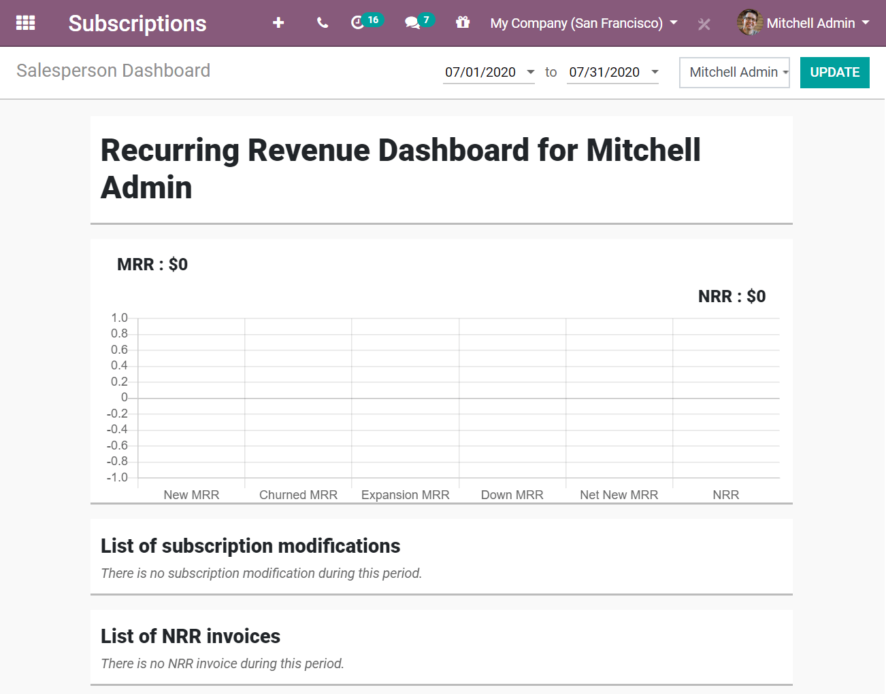

Reportes¶
Como sabemos, conocer el estado actual de nuestro negocio y hacia dónde se dirige es una parte esencial del éxito. En especial si trabajamos con servicios o productos de suscripción.
Antes de adentrarnos más al tema, es importante recordar ciertos conceptos clave para poder entender los siguientes reportes:
Ingreso mensual recurrente (MRR, por sus siglas en inglés): El MRR suele ser la métrica más importante para las empresas de suscripción. Muestra los ingresos mensuales obtenidos por productos o servicios de suscripción. Es un número consistente que se utiliza para hacer un seguimiento de todos los ingresos recurrentes a lo largo del tiempo, por mes.
Proyección anual (ARR, por sus siglas en inglés): La ARR es la versión anual del MRR, basada en el MRR actual, para estimar el rendimiento del siguiente año. Sin embargo, esta estimación no tiene en cuenta las variaciones y el crecimiento.

Ingresos no recurrentes (NRR, por sus siglas en inglés): Los NRR muestran los ingresos obtenidos por todo lo que no son productos o servicios de suscripción. Esto incluye ganancias poco frecuentes o únicas que probablemente no se produzcan en el curso ordinario de una empresa.
Retención de clientes: Prácticas para atraer a los clientes existentes con el fin de que sigan comprando productos o servicios de su empresa. La retención de clientes puede ser un reto, porque debe demostrar que es digno de la confianza de sus clientes.
Tasa de cancelación: También conocido como tasa de abandono o cancelación de clientes, la tasa de cancelación se puede definir como el porcentaje de suscriptores que cancelaron sus suscripciones en cierto periodo. Se pueden distinguir dos tipos:
Rotación de clientes: Corresponde a la tasa de cancelación de suscripciones.
Pérdida de ingresos: Corresponde a la tasa de pérdida de ingresos recurrentes mensuales.
Example
Imaginemos un aumento de $2 en un servicio de suscripción.
Perdimos 3 clientes de los 20 iniciales, lo cual genera una rotación de clientes del 15%.
- Por lo tanto, los $56 de diferencia de MRR de los $600 iniciales provocan una pérdida de ingresosdel 9.33%.

Recordatorio: aunque parece que avanzan hacia la misma dirección, puede que no sea así todo el tiempo.
Valor de por vida del cliente (CLV, por sus siglas en inglés): Indica cuántos ingresos se pueden esperar de un cliente durante todo su contrato. Este enfoque hace hincapié en la importancia de la retención de los clientes, desplazando nuestra atención de un enfoque trimestral o anual a uno a largo plazo.
Conozca los diferentes tipos de reportes a los que tiene acceso en la aplicación de Suscripción de Odoo.
Reporte de análisis de suscripciones¶
Vaya a . Estando ahí puede cambiar las Medidas. Odoo usa el Ingreso mensual recurrente de manera predeterminada. También escoger Cantidad, Precio recurrente, Ingresos anuales recurrentes y Cuenta. En este ejemplo, se añade Cantidad. De esta manera puede revisar ambas medidas al mismo tiempo. Incluso puede Agrupar por fecha de inicio o por Semana, para obtener una mejor vista de su reporte.

Reporte del análisis de retención¶
Vaya a . La medida predeterminada es Cuenta, pero puede cambiarla por la que más le convenga. En el siguiente ejemplo se eligió Ingresos recurrentes mensuales, y la periodicidad de Mes se mantiene intacta. Utilizando estos criterios, puede ver la progresión de la retención desde su inicio.

Reporte de los ingresos de KPI¶
Vaya a . Desde ahí puede ver los diferentes KPIs: Ingreso mensual recurrente, Ingresos netos, Ingresos no recurrentes, Ingresos por suscripción, Proyección anual, Valor de por vida, y más. También puede filtrar esta información para las suscripciones, empresas y equipos de venta. Esto es muy útil si busca información en específico.

El siguiente ejemplo muestra el reporte detallado del Ingreso mensual recurrente. Por el momento no hay datos, lo cual es normal para las empresas que van empezando. Pero, a medida que su empresa crezca a lo largo de los meses, estos gráficos se irán llenando con más y más datos. De nuevo, puede filtrar KPI específicos para suscripciones, empresas y equipos de ventas.

Reporte del tablero del vendedor¶
Vaya a . Esta página muestra un resumen del Ingreso mensual recurrente, Ingresos no recurrentes, Modificaciones en suscripciones, y Facturas no recurrentes de cada vendedor. Puede escoger el periodo y el vendedor a analizar.
